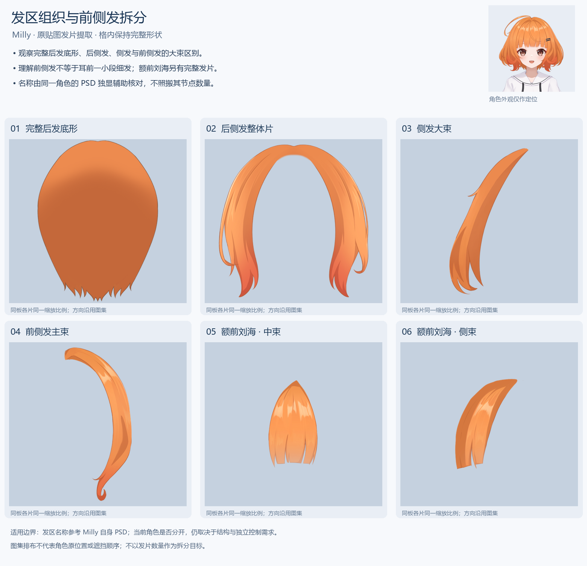
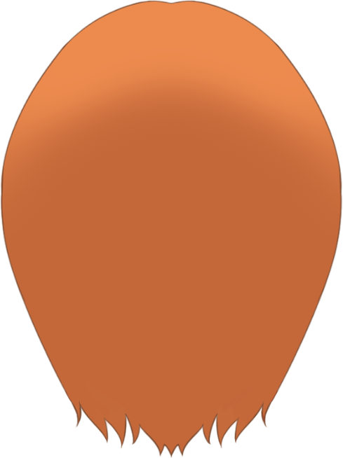
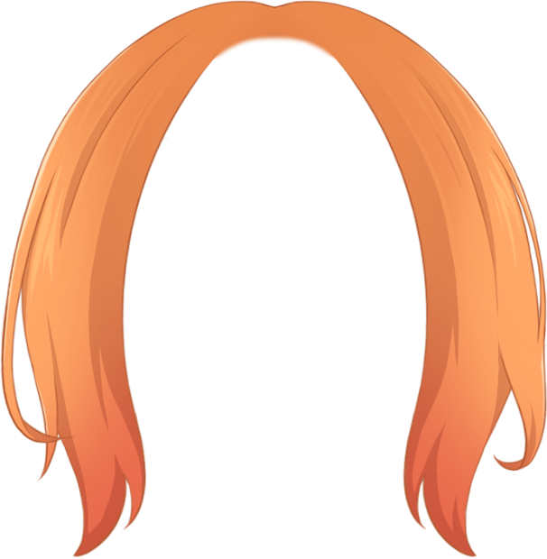
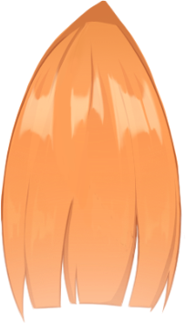
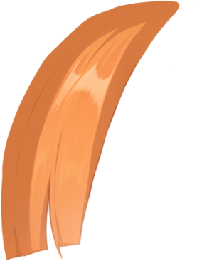
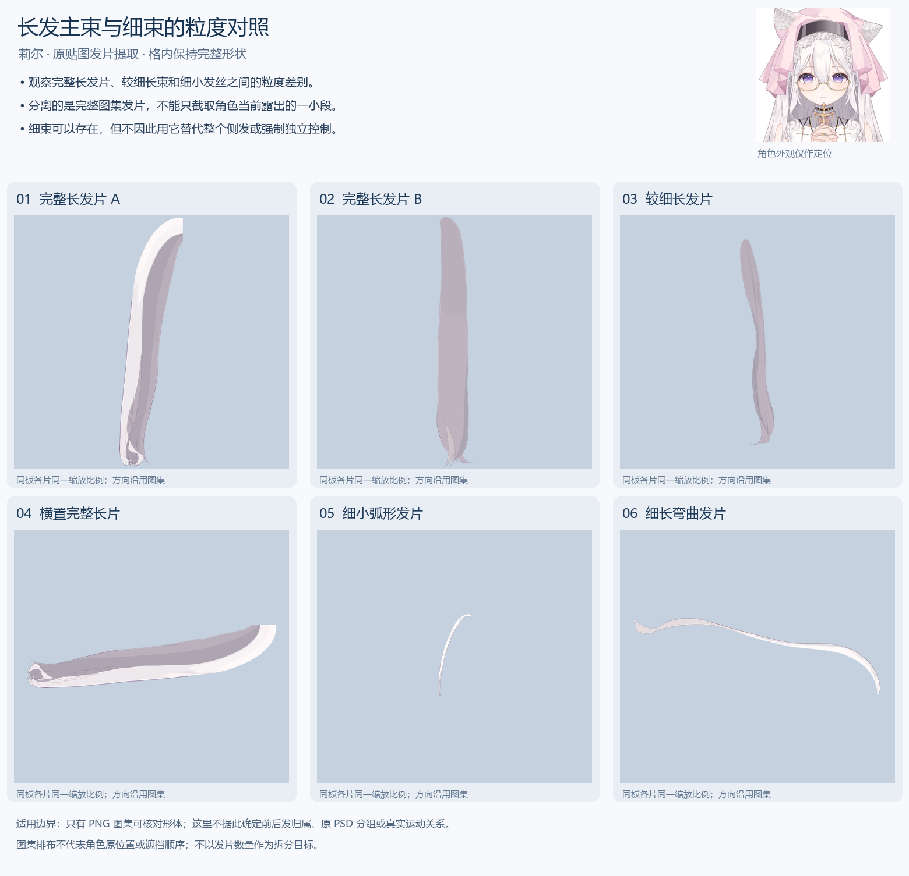
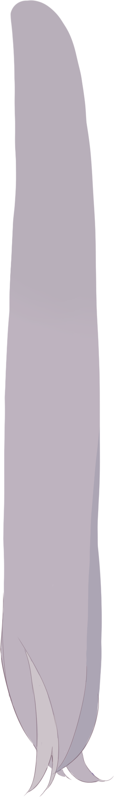
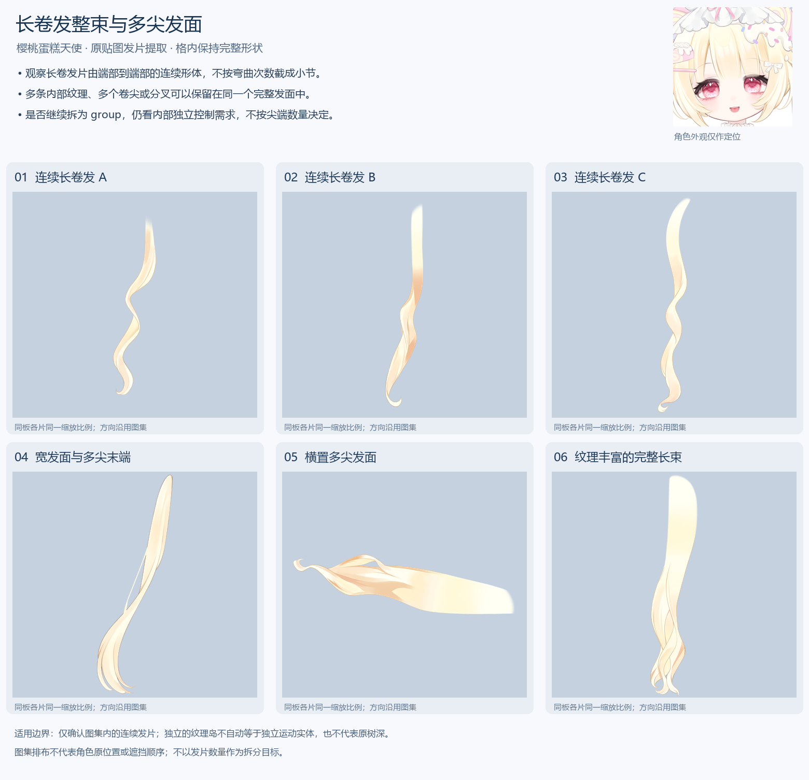

头发拆分参考板
从现有 Milly、莉尔、樱桃蛋糕天使三套模型贴图提取。名称直接说明每套参考的用途。原图不改变；同一板内发片使用相同比例，图集方向保留。
当前角色原图与控制需求优先。示例不规定发区数量、树深、group / part 或绘制顺序；图集中的独立发片不自动等于独立运动实体。
发区组织与前侧发拆分 · Milly
- 观察完整后发底形、后侧发、侧发与前侧发的大束区别。
- 理解前侧发不等于耳前一小段细发；额前刘海另有完整发片。
- 名称由同一角色的 PSD 独显辅助核对，不照搬其节点数量。
打开完整参考板

发区名称参考 Milly 自身 PSD；当前角色是否分开，仍取决于结构与独立控制需求。
查看原尺寸裁片与来源坐标

完整后发底形
[1628, 75, 2117, 729]
后侧发整体片
[75, 1138, 681, 1758]侧发大束
[2668, 76, 2989, 669]前侧发主束
[1970, 2160, 2244, 2782]
额前刘海 · 中束
[3534, 568, 3738, 923]
额前刘海 · 侧束
[2893, 1891, 3170, 2258]长发主束与细束的粒度对照 · 莉尔
- 观察完整长发片、较细长束和细小发丝之间的粒度差别。
- 分离的是完整图集发片，不能只截取角色当前露出的一小段。
- 细束可以存在，但不因此用它替代整个侧发或强制独立控制。
打开完整参考板

只有 PNG 图集可核对形体；这里不据此确定前后发归属、原 PSD 分组或真实运动关系。
查看原尺寸裁片与来源坐标
完整长发片 A
[5051, 68, 5579, 2141]
完整长发片 B
[6884, 68, 7186, 2153]较细长发片
[7297, 73, 7583, 1788]横置完整长片
[60, 4694, 2142, 5222]细小弧形发片
[6497, 1172, 6777, 1874]细长弯曲发片
[59, 5382, 2107, 6015] 长卷发整束与多尖发面 · 樱桃蛋糕天使
- 观察长卷发片由端部到端部的连续形体，不按弯曲次数截成小节。
- 多条内部纹理、多个卷尖或分叉可以保留在同一个完整发面中。
- 是否继续拆为 group，仍看内部独立控制需求，不按尖端数量决定。
打开完整参考板

仅确认图集内的连续发片；独立的纹理岛不自动等于独立运动实体，也不代表原树深。
查看原尺寸裁片与来源坐标
连续长卷发 A
[64, 65, 670, 2618]连续长卷发 B
[763, 75, 1300, 2957]连续长卷发 C
[1395, 71, 1867, 3121]宽发面与多尖末端
[4651, 128, 5719, 3229]横置多尖发面
[72, 4843, 3212, 5685]纹理丰富的完整长束
[5958, 2090, 6621, 5239] 来源、原图哈希与全部裁片坐标 · 参考图片清单与用途说明